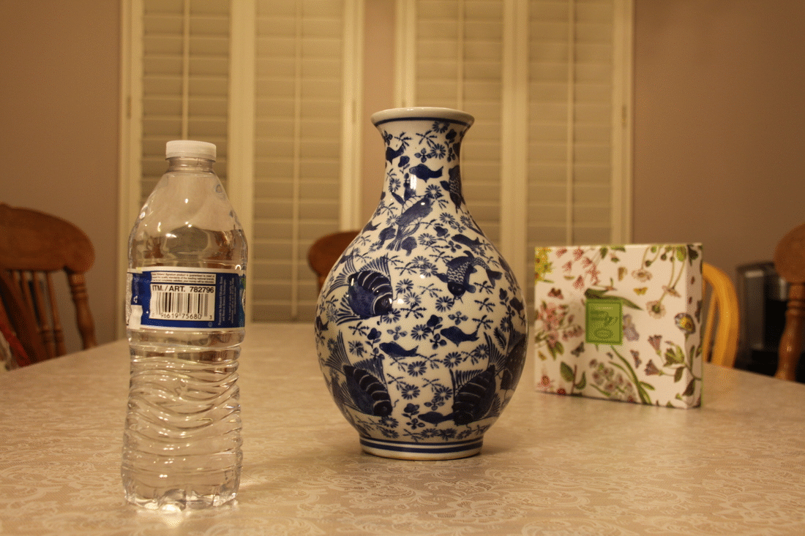

Final Projects
Louise Feng, cs194-26-afj
Fake Miniatures
In this project, we create a "miniture" effect on a photo by blurring out everything but one area of focus.
This effectively narrows the perceived depth of view in the scene so that it feels as if the lens were much
closer to the object. After taking in an input image, as suggested I adjust color to make the end result more
noticeable, then apply a blur filter defined by what I want in focus (in each picture there is a rectangle of
focus that progressively gets more blurred as you get farther).
Pictures I Took
Pictures From Internet
The Vertigo Shot
This project duplicates the dolly zoom. In this effect, we can see that the subject of the image
stays the same size, but the angle and detail of the background changes. This is created by taking
a series of photographs, each of which is taken at a different distance from the subject, moving
in a straight line, while using zoom to adjust the field of view. The pictures were taken with a
Canon EOS 50D.
Results
Vase
Here I took 6 pictures, progressively moving closer to the vase in each one.
Bells and Whistles: GIF

Plushie
Here I took 8 pictures, progressively moving farther to the plushie in each one.
Bells and Whistles: GIF